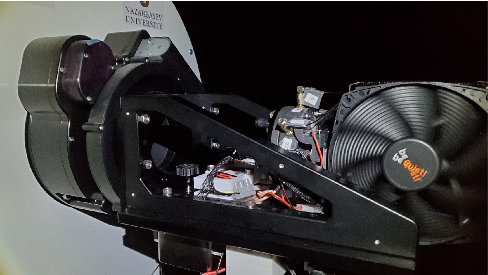
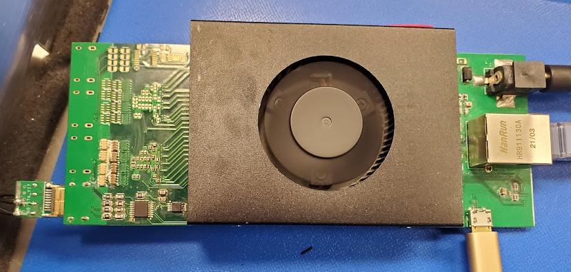

The Ultra-Fast Astronomy Project: Single Photon Imager for Nanosecond Astrophysics (SPINA)
In the Ultra-Fast Astronomy (UFA) program lead by Prof. George F. Smoot, we aim to survey the optical night sky on millisecond and shorter time scales, where we expect to see transients or variabilities from astronomical targets.
We designed a position sensitive silicon photomultiplier (PS-SiPM) based single photon imager, which we call the Single Photon Imager for Nanaosecond Astrophysics (SPINA). When an photon is detected on the PS-SiPM, a photo-electron is generated and amplified into a electric pulse, which is then distributed into the four anodes of the sensor. The readout system on the SPINA system will capture their pulse height, and interpret them as a time series of position, pulse strength with 8ns timing accuracy. We can then interpret this data stream of photon into Ultra-Fast light curve of astronomical objects.
I designed and developed the electronic system, cooling system and mechanical mounting of the SPINA system as my Ph.D. thesis project.

PS-SiPM Readout electronic system
Reading the high-speed analog pulse from the PS-SiPM detector is one of the challenge in the SPINA system, especially when we wanted to do it simple, cost efficient and on a single electronic board.
After some testing and experiments, we found commercial Analog Front-End (AFE) developed for medical ultrasound act as a good readout for SiPM system.
The AFE5818 from Texa Instrument can support 16 channels readout with 54dB, Low-noise amplification, in-chip tunable filters and 14bits, 65Msps ADC readout.
We designed our readout system based on the AFE5818 and a Field Programmable Gate Array Multipurpose System on ChIP (FPGA-MPSoC).
This readout system sucessfully capture the signal from our PS-SiPM, and perform realtime processing to decode the position information of each event.
The readout system also generate bias voltage to drive the PS-SiPM with individual channel tunabing ability.

Observatory Visit
We installed the SPINA system on the Nazarbayev University Transient Telescope at the Assy-Turgen Astrophysical Observatory (NUTTelA-TAO) for the first On-Sky testing at Jul 2022. Here is a timelapse video of us installing and testing the SPINA system.
I also participated in designing and programming readout systems for MKIDs in the Energetic Cosmo Laboratory (ECL).
Currently, we are testing a few different systems, including the ROACH2 board from minicom electronics, and designing a readout system base on I/Q modulator-demodulator and a FPGA board with GHz ADC/DACs.
2D Luminescence Microscopic Imaging System development
I joined Prof. KS Wong's laboratory for my final year project in undergraduate. I developed the optics, electronics and firmware of a laser excited scanning confocal microscope for material characterization. The system is still being used and upgraded currently.
This was my first research project during undergraduate studies, where we develop fast algorithm on estimating reachability problem of low thrust spacecrafts. We managed to build a O(N*k) algorithm compare to the traditional O(Nk) cost. The results were presented in IAC2017 conference.
Get in touch
Please Feel Free to contact me in the following links